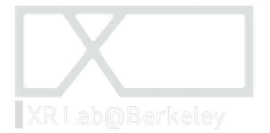

March 29 - May 15, 2021
On view on Virtual Bauer Wurster
Artifacts of Decarceration +
Restore Berkeley (The Peace Room)
Download the Rupp Exhibition
For Mac
1 - Basic Version
Simple installation with no voice chat
2 - Full Version
Installation with voice chat - See installation guidefor details
Mac Full Installation Guide for Virtual Bauer Wurster
1. For Mac, download, unzip, double click the .app file.
Wait for a while until a dialog box shows, saying the file can't be open.
Click on Cancel.
After that, right click on the file, and choose Open.
VBW should start in a few seconds, when the black screen disappears.
2. Allow access to microphone and folders.
For Windows
1 - Full Version
Download for personally-owned computers
Download for institution-owned computers